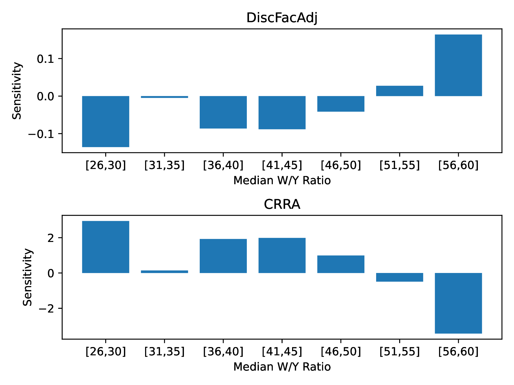
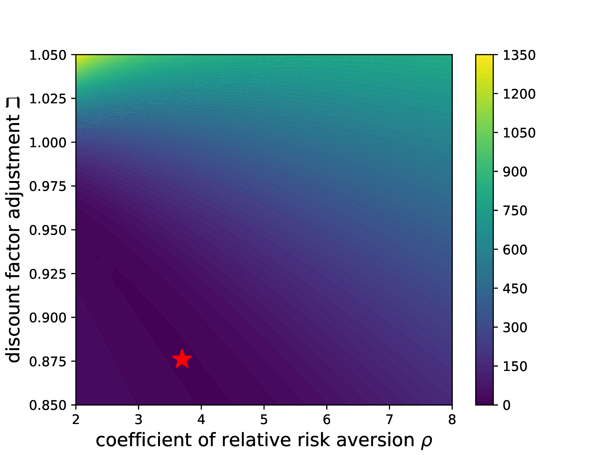

Note: The GitHub repo SolvingMicroDSOPs associated with this document contains python code that produces all results, from scratch, except for the last section on indirect inference. The numerical results have been confirmed by showing that the answers that the raw python produces correspond to the answers produced by tools available in the Econ-ARK toolkit, more specifically those in the HARK which has full documentation. The MSM results at the end have have been superseded by tools in the EstimatingMicroDSOPs repo.
Abstract
_____________________________________________________________________________________
These notes describe tools for solving microeconomic dynamic stochastic optimization problems,
and show how to use those tools for efficiently estimating a standard life cycle consumption/saving
model using microeconomic data. No attempt is made at a systematic overview of the many possible
technical choices; instead, I present a specific set of methods that have proven useful in my own work
(and explain why other popular methods, such as value function iteration, are a bad idea).
Paired with these notes is Python code that solves the problems described in the text.
| PDF: | https://github.com/llorracc/SolvingMicroDSOPs/blob/master/SolvingMicroDSOPs.pdf |
| Slides: | https://github.com/llorracc/SolvingMicroDSOPs/blob/master/SolvingMicroDSOPs-Slides.pdf |
| Web: | https://llorracc.github.io/SolvingMicroDSOPs |
| Code: | https://github.com/llorracc/SolvingMicroDSOPs/tree/master/Code |
| Archive: | https://github.com/llorracc/SolvingMicroDSOPs |
| (Contains LaTeX code for this document and software producing figures and results) |
1Carroll: Department of Economics, Johns Hopkins University, Baltimore, MD, ccarroll@jhu.edu The notes were originally written for my Advanced Topics in Macroeconomic Theory class at Johns Hopkins University; instructors elsewhere are welcome to use them for teaching purposes. Relative to earlier drafts, this version incorporates several improvements related to new results in the paper “Theoretical Foundations of Buffer Stock Saving” (especially tools for approximating the consumption and value functions). Like the last major draft, it also builds on material in “The Method of Endogenous Gridpoints for Solving Dynamic Stochastic Optimization Problems” published in Economics Letters, available at http://www.econ2.jhu.edu/people/ccarroll/EndogenousArchive.zip, and by including sample code for a method of simulated moments estimation of the life cycle model a la Gourinchas and Parker (2002) and Cagetti (2003). Background derivations, notation, and related subjects are treated in my class notes for first year macro, available at http://www.econ2.jhu.edu/people/ccarroll/public/lecturenotes/consumption. I am grateful to several generations of graduate students in helping me to refine these notes, to Marc Chan for help in updating the text and software to be consistent with Carroll (2006), to Kiichi Tokuoka for drafting the section on structural estimation, to Damiano Sandri for exceptionally insightful help in revising and updating the method of simulated moments estimation section, and to Weifeng Wu and Metin Uyanik for revising to be consistent with the ‘method of moderation’ and other improvements. All errors are my own. This document can be cited as Carroll (2023a) in the references.
These notes provide a gentle-as-possible introduction to a particular set of solution tools for the canonical consumption-saving/portfolio allocation problem for a consumer facing uninsurable idiosyncratic risk to nonfinancial income (e.g., labor or transfer income), first without and then with optimal portfolio choice,1 with detailed intuitive discussion of various mathematical and computational techniques that, together, accelerate the solution by many orders of magnitude. The problem is solved with and without liquidity constraints, and the infinite horizon solution is the limit of the finite horizon solution. After the basic consumption/saving problem with a deterministic interest rate is described and solved, an extension with portfolio choice between a riskless and a risky asset is also solved. Finally, a simple example shows how to use these methods (via the statistical ‘method of simulated moments’ (MSM for short)) to estimate structural parameters like the coefficient of relative risk aversion (a la Gourinchas and Parker (2002) and Cagetti (2003)).
The usual analysis of dynamic stochastic programming problems packs a great many events (intertemporal choice, stochastic shocks, intertemporal returns, income growth, the taking of expectations, time discounting, and more) into a complex decision in which the agent makes an optimal choice simultaneously taking all these elements into account. For the dissection here, we will be careful to break down everything that happens into distinct operations so that each element can be scrutinized and understood in isolation.
We are interested in the behavior of a consumer who begins period with a certain amount of ‘capital’
|
| (1) |
which immediately earns a return factor . Simultaneously, the consumer receives noncapital income , which is the product of ‘permanent income’ and a transitory shock :
|
| (2) |
whose expectation is 1 (that is, before realization of the transitory shock, the consumer’s expectation is that actual income will on average be equal to permanent income ).
The combination of the capital return and income defines the consumer’s ‘market resources’ (sometimes called ‘cash-on-hand,’ following Deaton (1992)):
|
| (3) |
available to be spent on consumption for a consumer subject to a liquidity constraint that requires (though we are not imposing such a constraint yet—see subsection 6.8). Finally we define
|
| (4) |
mnemonically as ‘assets-after-all-actions-are-accomplished.’
The consumer’s goal is to maximize discounted utility from consumption over the rest of a lifetime ending at date :
|
| (5) |
|
| (6) |
Equation (6) indicates that we are allowing for a predictable average profile of income growth over the lifetime (to capture typical career wage paths, pension arrangements, etc).2 Finally, the utility function is of the Constant Relative Risk Aversion (CRRA) form, .
It is well known that this problem can be rewritten in recursive (Bellman) form:
|
| (7) |
subject to the Dynamic Budget Constraint (DBC) defined by equation (3), and to the dynamic process for income defined in (6) and to a transition equation that defines next period’s initial capital as this period’s end-of-period assets:
|
| (8) |
The single most powerful method for speeding the solution of such models is to redefine the problem in a way that reduces the number of state variables (if at all possible). In the consumption context, the obvious idea is to see whether the problem can be rewritten in terms of the ratio of various variables to permanent noncapital (‘labor’) income (henceforth for brevity, ‘permanent income.’)
In the last period of life , there is no future value, (boldface denotes the value function in levels; the nonbold normalized counterpart is defined below), so the optimal plan is to consume everything:
|
| (9) |
Now define nonbold variables as the bold variable divided by the level of permanent income in the same period, so that, for example, ; and define .3 For our CRRA utility function, , so (9) can be rewritten as
|
| (10) |
Because we are dividing level variables by , a normalized return factor emerges:
|
| (11) |
(We treat as time-invariant and drop the period subscript that appeared in (3).)
Now define a new optimization problem:
|
| (12) |
Then it is easy to see that for , we can write boldface (nonnormalized) as a function of (normalized value) and permanent income:
|
| (13) |
and so on back to all earlier periods (by backward induction: if the factorization holds at , substituting into the Bellman equation at and using the homogeneity of CRRA utility yields the same factorization at ). Hence, if we solve the problem (12) which has only a single state variable , we can obtain the levels of the value function from (13), and of consumption and all other variables from the corresponding permanent-income-normalized solution objects by multiplying each by , e.g.
We have thus reduced the problem from two continuous state variables to one (and thereby enormously simplified its solution).
For future reference it will be useful to write (12) in the traditional way, by substituting and into :
|
| (14) |
The problem so far assumes that the agent has only one decision. But agents often have multiple choices per period—for example, a consumption decision, a labor supply choice, and a choice of what proportion of capital to invest in a risky vehicle. We identify each stage type in two ways: by a short-name (a textual name, given when the stage is first introduced) and by a control-name (the stage’s control variable, if any). For example, a labor supply stage might have short-name labor and control-name ; a consumption stage has control-name . A stage list that constitutes a period may therefore be written by short-name, e.g. , or by control-name, e.g. . A modeler might want to explore whether the order in which the stages are solved makes any difference, either to the substantive results or to aspects of the computational solution like speed and accuracy; with this scheme they do so merely by changing the order in which the stages are listed in the specification of the period.
If, as in section 2, we hard-wire into the solution code for each stage an assumption that its successor stage will be something in particular (say, the consumption stage assumes that the portfolio choice is next), then if we want to change the order of the stages (say, labor supply after consumption, followed by portfolio choice), we will need to re-hard-wire each of the stages to know new things about its new successor (for example, the specifics of the distribution of the rate of return on the risky asset must be known by whatever stage precedes the portfolio choice stage).
The cardinal insight of Bellman (1957) is that everything that matters for the solution to the current problem is encoded in a ‘continuation-value function.’
Using that insight, we describe here a framework for isolating the stage problems within a period from each other, and the period from its successors or predecessors in any other period. The advantage of this isolation is that each stage problem becomes a self-contained module: Its internal logic—the computation it performs on value functions—is defined independently of where it sits in the sequence of stages.
Modularity is valuable because it makes exploring such alternative model structures cheap. Using control-name indexing (e.g., the consumption stage by ), after considering the stage-order , the modeler can reorder the stages to consider, say, the order without rewriting any of the code that solves each individual stage.4 What must change are the transitions—the mappings that connect the end of one stage to the beginning of the next—which must be rewired to reflect the new ordering and its implied information structure. The stage-level code itself remains untouched.
The key is to distinguish, within each stage’s Bellman problem, three viewpoints or ‘perches’ (we use that word to empasize that the perch does not do anything: It is merely a collection of mathematical and computational functions and objects).
Arrival: Incoming state variables (e.g., ) are known, but any shocks associated with the stage have not been realized and decision(s) have not yet been made
Decision: The agent solves the decision problem for the period
Continuation: After all decisions have been made, their consequences are measured by evaluation of the continuing-value function at the values of the ‘outgoing’ state variables (sometimes called ‘post-state’ variables)
This framework is silent about when shocks (if any) occur. In a consumption problem, the usual assumption is that shocks have been realized before the spending decision is made so that the consumer knows their resources when they decide how much to spend. But in a portfolio choice problem, the portfolio share decision must be made before the shock that determines the risky rate of return is known.
Perch
Indicator
State
value functions
Explanation
Arrival
value at entry to stage
Decision(s) value of stage-decision
Continuation
value at exit
This cons-with-shocks stage corresponds to the consumption problem defined above.
The table illustrates notation we can use when analyzing the problem from a context ‘inside’ a particular stage of a specific period. We require that no variable can have more than one meaning or interpretation inside a period, and we prohibit any reference to values of any variables or functions or other model objects from outside the stage (or period). This is why we use different letters, and , to represent liquid resources before and after the consumption decision, even if ultimately this period’s continuation value of will transmute into the next period’s initial . (Both and are “k-type” variables—investable capital before returns are realized; the distinction from “m-type” variables like , which represent spendable resources after returns, is formalized below.)
In contrast, items like value functions or expectations operators have different meanings at different perches; we capture this using a subscript like . The fact that all functions in a perch depend on the same state variables (shown in the second column) allows us to write those functions without specifying their arguments.
Modularity requires that objects inside a period have no direct access to objects from any other period. This means that we must endow a stage or a period, at the time of its creation, with its end-of-stage-or-period value function .
For example, in a model in which every period contains only the single-stage consumption problem above, the continuation value function for the last (and only) stage at t will need to be ’connected’ to the arrival value function in (t+1), which of necessity requires us to use t-related notation. Concretely, if we designate the end-of-period value function as (which is defined as the continuation value function from the last stage in the period), we use the notation
|
| (15) |
to describe what the builder does when constructing the predecessor to period . The use of the ‘’ signals creation: the left-hand side is brought into existence by the builder.
Expectation operators across perches. The subscript on an expectation operator indicates the information set at that perch: conditions on the Arrival state but not on any shocks realized between Arrival and Decision. For adjacent perches at a period boundary— (Continuation of period ) and (Arrival of period )—the information sets are identical, so the two operators are mathematically interchangeable; the notational distinction reflects viewpoint (looking backward from ’s exit versus forward from ’s entry).
Tying two adjacent stages or periods together also requires that we define a Connector, , which specifies the relationship between the continuation-perch state variable(s) of the predecessor to the arrival-perch state variable(s) of the successor. Again concretely, for two successive periods each of which contains only a single consumption stage like the one described above, the Connector would look like:
|
| (16) |
State-variable types. A Connector is a pure rename: it asserts that two variables from adjacent stages or periods are different names for the same object. This is only meaningful if the two variables are of the same type. In our framework, state variables fall into two types:
k-type (capital): investable assets before returns and income are realized. Examples: (beginning-of-period capital) and (end-of-period assets after consumption, awaiting next period’s returns).
m-type (market resources): spendable resources after returns and income shocks have been realized—what Deaton (1992) calls “cash-on-hand.” Examples: (market resources at the Decision perch) and (post-shock market resources within a period).
The Connector is valid because both and are k-type; is valid because both are m-type. A Connector that crossed types—say, —would be illegal, because market resources and investable capital are not merely different names for the same quantity: converting between them requires a substantive transformation (the realization of returns and income).
We call the structure in which accumulating periods are stored the pile . Once backward induction is complete, the pile holds the full definition—what might colloquially be called “the full model.” (We avoid the term “model” here because it is used in too many other ways and contexts.) Since we accrete the elements of one by one as we iterate backward, it can be thought of as a pile of defined periods (and the Connectors between them).
The process of building the pile is straightforward. We start from the terminal period (section 3: , consume everything), so initially . We will denote the ‘builder’ as a computational object with notation like , and we will speak of the backward-induction creation of a new period as being the result of ‘applying‘ the to the existing . The backward builder augments the by creating a new Connector and then the new period’s solution, so the pile then has the form . Section 6 details the construction of ; with multiple stages or control variables the structure generalizes as in section 9.
For reference and to illustrate our new notation, we will now derive the Euler equation and other standard results for the problem described above. Since we can write value as of the end of the consumption stage as a function of :
|
| (17) |
Derivative notation convention. Throughout this document, a superscript on a function means its derivative with respect to the relevant state variable at that perch: , . So, the first order condition for (14) with respect to 5 is
|
| (18) |
which illustrates the derivative convention (e.g. is the derivative of with respect to its argument).6 For functions of more than one argument, we append the variable name: denotes the partial derivative of with respect to .
Because the Envelope theorem tells us that
|
| (19) |
we can substitute the LHS of (19) for the RHS of (18) to get
|
| (20) |
and rolling forward one period,
|
| (21) |
so that substituting the LHS in equation (18) finally gives us the Euler equation for consumption:
|
| (22) |
The derivation above used period-qualified subscripts (e.g., , ) because the Euler equation relates objects across periods. We can now restate the problem (14) using the simpler within-stage notation, which drops the period qualifier:
|
| (23) |
whose first order condition with respect to is
|
| (24) |
which is mathematically equivalent to the usual Euler equation for consumption.
We will revert to this formulation when we reach subsection 6.9.
This section examines the second-to-last period in detail, illustrating a number of powerful techniques for speeding and improving its solution; in doing so it illustrates how the pile (subsection 4.4) is built backward. We set here to reduce clutter.
If , the second-to-last-period decision-perch problem is
|
| (25) |
Using (0) ; (1) ; (2) the definition of ; and (3) the definition of the expectations operator,
|
| (26) |
where is the cumulative distribution function for , this maximization problem implicitly defines a ‘period-and-stage-local function’ that yields optimal consumption in period for any specific numerical level of resources like . The explicit statement of the problem is
|
| (27) |
But because there is no general analytical solution, for any given we must use numerical tools to find the that maximizes the expression. This is excruciatingly slow: for every candidate , a definite integral over must be calculated numerically, and optimization is itself a costly operation, so the combination of the two is a double-whammy for slowdown.
Our first speedup trick is therefore to construct a discrete approximation to the lognormal distribution that can be used in place of numerical integration. That is, we want to approximate the expectation over of a function by calculating its value at set of points , each of which has an associated probability weight :
Such a procedure is called a ‘quadrature’ method of integration; Tanaka and Toda (2013) survey a number of options, but for our purposes we choose the one which is easiest to understand: An ‘equiprobable’ approximation (that is, one where each of the values of has an equal probability, equal to ).
We calculate such an -point approximation as follows.
Define a set of points from to on the interval as the elements of the set .7 Call the inverse of the distribution , and define the points . Then the conditional mean of in each of the intervals numbered 1 to is:
|
| (28) |
and when the integral is evaluated numerically for each the result is a set of values of that correspond to the mean value in each of the intervals.
The method is illustrated in Figure 1. The solid continuous curve represents the “true” CDF
for a lognormal
distribution such that ,
. The short vertical line segments
represent the equiprobable
values of which are used to
approximate this distribution.8
The following notebook snippet constructs these points.
We now substitute our approximation (29) for in (25) which is simply the sum of numbers and is therefore easy to calculate (compared to the full-fledged numerical integration (26) that it replaces).
|
| (29) |
Given any particular value of , a numerical maximization tool can now find the that solves (25) in a reasonable amount of time.
The notebook responsible for computing an estimated consumption function begins in “Solving the Model by Value Function Maximization,” where a vector of possible values of market resources is created. In these notes we use for such a vector (e.g. the first entry, the last). For illustration we take the grid to be the first five nonnegative integers, .
This is accomplished in “An Interpolated Consumption Function,” which generates an interpolating function that we designate .
Figures 2 and 3 show plots of the constructed and . While the function looks very smooth, the fact that the function is a set of line segments is very evident. This figure provides the beginning of the intuition for why trying to approximate the value function directly is a bad idea (in this context).9


Piecewise linear ‘spline’ interpolation as described above works well for generating a good approximation to the true optimal consumption function. However, there is a clear inefficiency in the program: Since it uses equation (25), for every value of the program must calculate the utility consequences of various possible choices of (and therefore ) as it searches for the best choice.
For any given index in , as it searches for the corresponding optimal , the algorithm will end up calculating for many values close to the optimal . Indeed, even when searching for the optimal for a different (say for ) the search process might compute for an close to the correct optimal for . But if that difficult computation does not correspond to the exact solution to the problem, it is discarded.
The notebook section “Interpolating Expectations,” now interpolates the expected value of ending the period with a given amount of assets.10
Figure 4 compares the true value function to the approximation produced by following the interpolation procedure; the approximated and exact functions are of course identical at the gridpoints of and they appear reasonably close except in the region below .


Nevertheless, the consumption rule obtained when the approximating is used instead of is surprisingly bad, as shown in figure 5. For example, when goes from 2 to 3, goes from about 1 to about 2, yet when goes from 3 to 4, goes from about 2 to about 2.05. The function fails even to be concave, which is distressing because Carroll and Kimball (1996) prove that the correct consumption function is strictly concave in a wide class of problems that includes this one.
Loosely speaking, our difficulty reflects the fact that the consumption choice is governed by the marginal value function, not by the level of the value function (which is the object that we approximated). To understand this point, recall that a quadratic utility function exhibits risk aversion because with a stochastic ,
|
| (30) |
(where is the ‘bliss point’ which is assumed always to exceed feasible ). However, unlike the CRRA utility function, with quadratic utility the consumption/saving behavior of consumers is unaffected by risk since behavior is determined by the first order condition, which depends on marginal utility, and when utility is quadratic, marginal utility is unaffected by risk:
|
| (31) |
Intuitively, if one’s goal is to accurately capture choices that are governed by marginal value, numerical techniques that approximate the marginal value function will yield a more accurate approximation to optimal behavior than techniques that approximate the level of the value function.
The first order condition of the maximization problem in period is:
|
| (32) |
The downward-sloping curve in Figure 6 shows the value of for our baseline parameter values for (the horizontal axis). The solid upward-sloping curve shows the value of the RHS of (32) as a function of under the assumption that . Optimal consumption given is the at which the two curves intersect—just below . The dashed curve shows the same for ; its intersection with is slightly below , so increasing from 3 to 4 raises optimal consumption by about 0.5.
Now consider the derivative of . Because the function is piecewise linear, its derivative is a step function: constant between adjacent gridpoints, with jumps at each gridpoint.
The solid-line step function in Figure 6 depicts the actual value of . When we attempt to find optimal values of given using , the numerical optimization routine will return the for which . Thus, for the program will return the value of for which the downward-sloping curve intersects with the ; as the diagram shows, this value is exactly equal to 2. Similarly, if we ask the routine to find the optimal for , it finds the point of intersection of with ; and as the diagram shows, this intersection is only slightly above 2. Hence, this figure illustrates why the numerical consumption function plotted earlier returned values very close to for both and .
We would obviously obtain much better estimates of the point of intersection between and if our estimate of were not a step function. In fact, we already know how to construct linear interpolations to functions, so the obvious next step is to construct a linear interpolating approximation to the expected marginal value of end-of-period assets function at the points in :
|
| (33) |
yielding (the vector of expected end-of-period- marginal values of assets corresponding to ), and construct as the linear interpolating function that fits this set of points.
The results are shown in Figure 7. The linear interpolating approximation looks roughly as good (or bad) for the marginal value function as it was for the level of the value function. However, Figure 8 shows that the new consumption function (long dashes) is a considerably better approximation of the true consumption function (solid) than was the consumption function obtained by approximating the level of the value function (short dashes).

Even the new-and-improved consumption function diverges notably from the true solution, especially at lower values of . That is because the linear interpolation does an increasingly poor job of capturing the nonlinearity of at lower and lower levels of .
This is where we unveil our next trick. To understand the logic, start by considering the case where and there is no uncertainty (that is, we know for sure that income next period will be ). The final Euler equation (recall that we are still assuming that ) is then:
|
| (34) |
In the case we are now considering with no uncertainty and no liquidity constraints, the optimizing consumer does not care whether a unit of income is scheduled to be received in the future period or the current period ; there is perfect certainty that the income will be received, so the consumer treats its PDV as equivalent to a unit of current wealth. Total resources available at the point when the consumption decision is made is therefore comprised of two types: current market resources and ‘human wealth’ (the PDV of future income) of (because it is the value of human wealth as of the end of the period, there is only one more period of income of 1 left).
|
| (35) |
Of course, this is a highly nonlinear function. However, if we raise both sides of (35) to the power the result is a linear function:
|
| (36) |
This is a specific example of a general phenomenon: A theoretical literature discussed in Carroll and Kimball (1996) establishes that under perfect certainty, if the period-by-period marginal utility function is of the form , the marginal value function will be of the form for some constants . This means that if we were solving the perfect foresight problem numerically, we could always calculate a numerically exact (because linear) interpolation.
The key insight is that much of the nonlinearity in comes from raising to the power . By inverting that operation (raising to ), we can ‘unwind’ it, and the remaining nonlinearity is much smaller. Specifically, applying the foregoing insights to the end-of-period value function , we can define an ‘inverse marginal value’ function
|
| (37) |
which would be linear in the perfect foresight case.11 We then construct a piecewise-linear interpolating approximation to the function, , and for any that falls in the range we obtain our approximation of marginal value from:
|
| (38) |
The most interesting thing about all of this, though, is that the function has another interpretation. Recall our point in (24) that . Since with CRRA utility , this can be rewritten and inverted
|
| (39) |
This gives a concrete interpretation: for any ending , it reveals how much the agent must have consumed to (optimally) reach that . We will therefore henceforth refer to it as the ‘consumed function:’
|
| (40) |
Thus, for example, for period our procedure is to calculate the vector of points on the consumed function:
|
| (41) |
with the idea that we will construct an approximation of the consumed function as the interpolating function connecting these points.
This is the appropriate moment to ask an awkward question: How should an interpolated, approximated ‘consumed’ function like be extrapolated to return an estimated ‘consumed’ amount when evaluated at an outside the range spanned by ?
For most canned piecewise-linear interpolation tools like scipy.interpolate, when the ‘interpolating’ function is evaluated at a point outside the provided range, the algorithm extrapolates under the assumption that the slope of the function remains constant beyond its measured boundaries (that is, the slope is assumed to be equal to the slope of nearest piecewise segment within the interpolated range); for example, if the bottommost gridpoint is and the corresponding consumed level is we could calculate the ‘marginal propensity to have consumed’ and construct the approximation as the linear extrapolation below from:
|
| (42) |
To see that this will lead us into difficulties, consider what happens to the true (not approximated) as approaches a quantity we will call the ‘natural borrowing constraint’: . From (33) we have
|
| (43) |
But since , exactly at the first term in the summation would be which is infinity. The reason is simple: is the PDV, as of , of the minimum possible realization of income in (). Thus, if the consumer borrows an amount greater than or equal to (that is, if the consumer ends with ) and then draws the worst possible income shock in period , they will have to consume zero in period , which yields utility and marginal utility.
As Zeldes (1989) first noticed, this means that the consumer faces a ‘self-imposed’ (or, as above, ‘natural’) borrowing constraint (which springs from the precautionary motive): They will never borrow an amount greater than or equal to (that is, assets will never reach the lower bound of ). The constraint is ‘self-imposed’ in the precise sense that if the utility function were different (say, Constant Absolute Risk Aversion), the consumer might be willing to borrow more than because a choice of zero or negative consumption in period would yield some finite amount of utility.12
This self-imposed constraint cannot be captured well when the function is approximated by a piecewise linear function like , because it is impossible for the linear extrapolation below to correctly predict
So, the marginal value of saving approaches infinity as . But this implies that ; that is, as approaches its ‘natural borrowing constraint’ minimum possible value, the corresponding amount of worst-case must approach its lower bound: zero.
The upshot is a realization that all we need to do to address these problems is to prepend each of the and from (41) with an extra point so that the first element in the mapping that produces our interpolation function is . This is done in section “The Self-Imposed ‘Natural’ Borrowing Constraint and the Lower Bound” of the notebook.

Figure 9 shows the result. The solid line calculates the exact numerical value of the consumed function while the dashed line is the linear interpolating approximation This figure illustrates the value of the transformation: The true function is close to linear, and so the linear approximation is almost indistinguishable from the true function except at the very lowest values of .
Figure 10 similarly shows that when we generate using our augmented (dashed line) we obtain a much closer approximation to the true marginal value function (solid line) than we obtained in the previous exercise which did not do the transformation (Figure 7).

The solution procedure above for finding still requires us, for each point in , to use a numerical rootfinding algorithm to search for the value of that solves . Though sections 6.7 and 6.8 developed a highly efficient and accurate procedure to calculate , those approximations do nothing to eliminate the need for using a rootfinding operation for calculating, for an arbitrary , the optimal . And rootfinding is a notoriously computation-intensive (that is, slow!) operation.
Fortunately, it turns out that there is a way to completely skip this slow rootfinding step. The method can be understood by noting that we have already calculated, for a set of arbitrary values of , the corresponding values for which this is optimal.
But with mutually consistent values of and (consistent, in the sense that they are the unique optimal values that correspond to the solution to the problem), we can obtain the vector that corresponds to both of them from
|
| (44) |
These gridpoints are “endogenous” in contrast to the usual solution method of specifying some ex-ante (exogenous) grid of values of and then using a rootfinding routine to locate the corresponding optimal consumption vector .
This routine is performed in the “Endogenous Gridpoints” section of the notebook. First, the endOfPrd.cCntn_Tm1 function is called for each of the pre-specified values of end-of-period assets stored in . These values of consumption and assets are used to produce the list of endogenous gridpoints, stored in the object mVec_egm. With the values in hand, the notebook can generate a set of and pairs that can be interpolated between in order to yield at virtually zero computational cost!13
One might worry about whether the
points obtained in this way will provide a good representation of the consumption function as
a whole, but in practice there are good reasons why they work well (basically, this procedure
generates a set of gridpoints that is naturally dense right around the parts of the function with
the greatest nonlinearity).

Figure 11 plots the actual consumption function and the approximated consumption function derived by the method of endogenous grid points. Compared to the approximate consumption functions illustrated in Figure 8, is quite close to the actual consumption function.
Thus far, we have arbitrarily used gridpoints of (augmented in the last subsection by ). But it has been obvious from the figures that the approximated function tends to be farthest from its true value at low values of . Combining this with our insight that is a lower bound, we are now in position to define a more deliberate method for constructing gridpoints for – a method that yields values that are more densely spaced at low values of where the function is more nonlinear.
A pragmatic choice that works well is to find the values such that (1) the last value exceeds the lower bound by the same amount as our original maximum gridpoint (in our case, 4.); (2) we have the same number of gridpoints as before; and (3) the multi-exponential growth rate (that is, for some number of exponentiations – our default is 3) from each point to the next point is constant (instead of, as previously, imposing constancy of the absolute gap between points).


Section “Improve the ” begins by defining a function which takes as arguments the specifications of an initial grid of assets and returns the new grid incorporating the multi-exponential approach outlined above.
Notice that the graphs depicted in Figures 12 and 13 are notably closer to their respective truths than the corresponding figures that used the original grid.
In section “Solve for in Multiple Periods,” the natural and artificial borrowing constraints are combined with the endogenous gridpoints method to approximate the optimal consumption function for a specific period. Then, this function is used to compute the approximated consumption in the previous period, and this process is repeated for some specified number of periods.
The essential structure of the program is a loop that iteratively solves for consumption functions by working backward from an assumed final period, using the dictionary cFunc_life to store the interpolated consumption functions up to the beginning period. Consumption in a given period is utilized to determine the endogenous gridpoints for the preceding period. This is the sense in which the computation of optimal consumption is done recursively.
In the terminology of section 4.3, each iteration of this backward loop is an invocation of the backward builder : it creates the Connector (inserted into between the new and existing period solutions), uses it and the already-solved next period to perform the creation of , and solves for the optimal consumption rule. The dictionary cFunc_life is the computational embodiment of —the growing structure of solved periods and Connectors between them assembled by backward induction.
For a realistic life cycle problem, it would also be necessary at a minimum to calibrate a nonconstant path of expected income growth over the lifetime that matches the empirical profile; allowing for such a calibration is the reason we have included the vector in our computational specification of the problem.
The code creates the relevant functions for any period in the horizon, at the given values of . Figure 14 shows for . At least one feature of this figure is encouraging: the consumption functions converge as the horizon extends, something that Carroll (2023b) shows must be true under certain parametric conditions that are satisfied by the baseline parameter values being used here.

The construction of in this single-stage case uses the builders and connectors of subsection 4.3.
All of the solution methods presented so far have involved period-by-period iteration from an assumed last period of life, as is appropriate for life cycle problems. However, if the parameter values for the problem satisfy certain conditions (detailed in Carroll (2023b)), the consumption rules (and the rest of the problem) will converge to a fixed rule as the horizon (remaining lifetime) gets large, as illustrated in Figure 14. Furthermore, Deaton (1991), Carroll (1992; 1997) and others have argued that the ‘buffer-stock’ saving behavior that emerges under some further restrictions on parameter values is a good approximation of the behavior of typical consumers over much of the lifetime. Methods for finding the converged functions are therefore of interest, and are dealt with in this section.
Of course, the simplest such method is to solve the problem as specified above for a large number of periods. This is feasible, but there are much faster methods.
In solving an infinite-horizon problem, it is necessary to have some metric that determines when to stop because a solution that is ‘good enough’ has been found.
A natural metric is defined by the unique ‘target’ level of wealth that Carroll (2023b) proves will exist in problems of this kind under certain conditions: The such that
|
| (45) |
where the accent is meant to signify that this is the value that other ’s ‘point to.’
Given a consumption rule it is straightforward to find the corresponding . So for our problem, a solution is declared to have converged if the following criterion is met: , where is a very small number and defines our degree of convergence tolerance.
Similar criteria can obviously be specified for other problems. However, it is always wise to plot successive function differences and to experiment a bit with convergence criteria to verify that the function has converged for all practical purposes.
The endogenous gridpoints method constructs a consumption function by interpolating a finite set of pairs. A practical problem arises when the approximation must be evaluated at values of outside the grid: naïve linear extrapolation can predict consumption so high that precautionary saving turns negative, an economically impossible result.
A solution, developed in Carroll, Lujan, Chipeniuk, Tokuoka, and Wu (2026), exploits the fact that the true consumption function is bounded between two analytically computable perfect-foresight rules.
Optimist. An agent who is certain that future income shocks will always equal their mean has human wealth and consumes
|
| (46) |
where is the minimal marginal propensity to consume of the corresponding perfect-foresight problem.
Pessimist. An agent who assumes the worst possible income realisation in every future period has lower human wealth and a consumption floor at
|
| (47) |
where is the natural borrowing constraint.
Realist. The true solution satisfies for all .
Because the realist’s consumption always lies between these bounds, one can define a moderation ratio
|
| (48) |
which measures how close the realist is to the optimist () versus the pessimist (). The key insight is that the logit of this ratio, , is nearly linear in and therefore easy to interpolate accurately. Consumption is recovered via the inverse transformation:
|
| (49) |
where is the logit-transformed moderation ratio. Since the recovered is automatically sandwiched between the bounds, the extrapolation problem vanishes.
Figure 15 illustrates the idea: the realist consumption function (middle curve) is bounded above by the optimist and below by the pessimist.

The full treatment in Carroll, Lujan, Chipeniuk, Tokuoka, and Wu (2026) extends the method with tighter upper bounds, applies an analogous transformation to the value function, and shows how to handle stochastic returns and Hermite interpolation refinements.
We now consider problems with multiple control variables. Section 9.1 presents the joint consumption-and-portfolio optimization as a canonical example: we derive the simultaneous first-order conditions and show that direct numerical solution of the multidimensional problem is computationally expensive—but that decomposing it into a sequence of single-control problems is much faster. Section 9.2 develops the stage-based machinery for such decompositions, building on the modular notation from section 4: the discounting stage (disc), the standalone portfolio optimization (section 9.2.2), and the general-purpose portable returns stage that unifies portfolio choice and shock realization. Section 9.2.5 combines these building blocks into three canonical period types.
Our canonical example of a multi-control problem is the case where the agent has both a consumption choice and a decision about (archaic Greek stigma): the share of assets in the risky asset. Given a risky-asset return factor and a riskless return factor , the realized portfolio return is
|
| (50) |
Written as a single combined decision (substituting the budget constraint):
|
| (51) |
Whether the stochastic variables and are revealed at the end of the current period or the start of the next does not affect this equation. The first-order conditions for this joint problem are:
|
| (52) |
Direct simultaneous solution of these two conditions is computationally expensive; the remainder of this section develops modular stage-based machinery that decomposes the problem into a sequence of simpler single-control optimizations.
The single-stage-per-period formulation from sections 2–6 is equivalent to a sequence of simpler stages, each with a single job. We decompose it in that way so that adding portfolio choice later requires no change to the consumption-stage code—only the stage list and the Connectors between stages change (see section 4). The decomposition yields the same value functions, consumption function, and Euler equation.
The simplest decomposition isolates discounting into a standalone stage that applies for the entire period. We call it the disc stage (control-name ). From equation (15), ; the factor was implicitly inside the backward builder that created . Instead, henceforth at the end of every period, we put the stub disc stage which has no choice, no shocks, and a trivial decision value function , and we set the discount factor to 1 for every prior stage in the period (leaving all the discounting to the disc stage).14
n.b.:
is a generic passthrough state whose type (k-type or m-type) is inherited from the predecessor stage’s Continuation state. For example, when disc follows cons-noshocks,
stands for
(k-type); when it follows portable,
stands for
(m-type).
Perch
Indicator
State
value functions
Explanation
Arrival
no shocks
Decision(s) apply
Continuation
value at exit
The two-stage period has stage list (more compactly, ). The convention that every non-disc stage is undiscounted and every period ends with disc will mean we do not have to rearrange discounting as we rearrange stages within the period.
Consider the standalone problem of an ‘investor’ choosing the portfolio share . The state variable at the start is (capital available for investment); the Decision chooses ; stochastic shocks (, ) are then realized, yielding the Continuation state . The portfolio share must be chosen before the return shock is realized. We write rather than for the post-shock state because a strict rule of our framework is the prohibition of multiple timings of a given variable within a period. Note that is m-type (market resources after shocks), matching ; the decoration distinguishes the two timings while preserving the type (see section 4.3).
The first-order condition with respect to is:
|
| (53) |
where denotes the derivative of the continuation value function with respect to .
The Decision equation yields the portfolio share function:
|
| (54) |
The portfolio optimization problem above can be generalized into a single configurable returns-and-shocks stage by making the portfolio share an optional parameter rather than a control variable that must always be optimized. We call this the portable stage (“portfolio-able”): it is “able” to perform portfolio optimization or not, depending on a parameter .
The stage’s Arrival state includes the investable capital and an optional portfolio share , where means “absent—optimize.” The behavior of the stage depends on :
Optimize mode (): The stage solves the portfolio optimization problem from section 9.2.2, choosing optimally via (54) with first-order condition (53).
Fixed-share mode (): The portfolio share is prescribed; no optimization occurs. The value function is .
No-risky-investment mode (): A special case of fixed-share mode. All assets earn the riskless return: . The risky return is irrelevant. The value function reduces to .
The perches of this stage are:
Perch
Indicator
State
value functions
Explanation
Arrival
no pre-decision shocks
Decision(s) depends on (see above) choose or use
Continuation
post-shock value
When , the Decision value function is . When , it is with fixed at .
Argument notation. When a stage can be constructed with a fixed parameter, we write the value of that argument in parentheses. Thus denotes the portable stage with (the shocks-only configuration described below), and denotes portable in optimize mode.
The cons-with-shocks stage in section 4.2 combines the shock realization and the consumption decision. We split these into two stages.
The shocks-only stage (portable with ). Calling the portable stage with produces a stage whose only function is to draw the shocks. We call this configuration shocks-only. It handles the transition from capital to (post-shock) market resources : with , the transition is —precisely the mapping from the original problem (the next stage receives this as ). No optimization occurs:
Perch
Indicator
State
value functions
Explanation
Arrival
pre-shock value
Decision(s) (none) no choice
Continuation
post-shock value
The Arrival value function takes the expectation over the shocks: . The Continuation state is fully determined (non-stochastic) once the shocks are realized.
The shock-free consumption stage (cons-noshocks). With shocks in the preceding stage, the consumption stage has Arrival state and no shocks between Arrival and Decision, so . We call this the cons-noshocks stage (control-name ):
Perch
Indicator
State
value functions
Explanation
Arrival
no shocks; identity
Decision(s) choose consumption
Continuation
value at exit
The Decision equation for this stage defines the consumption function:
|
| (55) |
The Decision is unchanged from the single-stage formulation. But this stage is a ’stub’: It could not be the only stage in a period because its continuation state is of a different type than its arrival state . A full period would require it to be paired with another stage that produced the transition from to .
The three-stage period. The consumption-only period from sections 2–6 is defined by the stage list , or equivalently in control-name form (recall denotes portable with ; see section 9.2.3). Explicitly:
| Element | Transition | Action |
| shocks-only | shocks realize (no choice) | |
| rename | ||
| cons-noshocks | choose | |
| disc | apply | |
This is functionally identical to the single-stage formulation. Each stage resolves its stochastic content internally; the value at a stage’s exit is therefore non-stochastic.
Multi-stage notation. Once our Pile has accumulated multiple periods and stages, we address any perch-specific object (like a value function) by comma-separated subscripts, ordered from outermost to innermost—period, stage, perch:
Using the portable stage (with or ), the cons-noshocks stage, and the disc stage at the end of every period, we can construct three kinds of periods. A period type is defined by its stage list (section 4), written in square brackets:
Period type
Transition
Description
shocksonly–consnoshocks
No portfolio choice
portable–consnoshocks Beginning-of-period returns
consnoshocks–portable
End-of-period returns
We now describe these three variants in detail. We present the consnoshocks–portable (end-of-period returns) variant first, because it makes the need for the notation most transparent.
The consnoshocks–portable period (end-of-period returns). If the portfolio share choice is made and stochastic shocks are realized at the end of the period, the shock-free consumption stage comes first and the stage follows: stage list by control-name . The flow is:
| Element | Transition | Action |
| cons-noshocks | choose | |
| rename | ||
| portable | choose , shocks realize | |
| disc | apply | |
The within-period Connector relabels the consumption stage’s output as the stage’s input; the remaining Connectors are catalogued in section 9.2.6. The reason we used rather than for the post-portfolio state now becomes evident: this prevents two different values of from coexisting within the same period. The decoration is appropriate because remains m-type—it is market resources, differing from only in timing.
The portable–consnoshocks period (beginning-of-period returns). The beginning-returns problem places the stage before the shock-free consumption stage: stage list by control-name . The first-order condition for the portfolio-choice stage is (53).
The flow through a single period is:
| Element | Transition | Action |
| portable | choose , shocks realize | |
| rename | ||
| cons-noshocks | choose | |
| disc | apply | |
Since all stochastic shocks are realized inside the stage, the value that exits it is fully determined. The within-period Connector therefore simply relabels as for the consumption stage (see section 9.2.6 for the full catalogue).
The shocksonly–consnoshocks period. This is the three-stage decomposition from above: . A life cycle model in which portfolio choice is available at some ages but not others is now trivially constructed: the modeler simply sets for ages with active portfolio choice and for ages without.
To construct a Pile that repeats instances of a given period type, the backward builder must know the between-period Connector that ties the last stage of one period to the first stage of the next (see section 4.3). Within-period Connectors are already specified in the period tables above.
| period type | Between-period Connector |
| shocksonly–consnoshocks | |
| portable–consnoshocks | |
| consnoshocks–portable | |
Each of these Connectors is a pure rename that respects the state-variable type constraint from section 4.3: and are both k-type (capital before returns), while and are both m-type (market resources after returns). The connector is determined by the predecessor’s exit state and the successor’s first-stage arrival state. For portable–consnoshocks, the period ends after disc (passthrough), so the exit state is ; the next period’s portable stage arrives with , hence . For shocksonly–consnoshocks the same logic gives . For consnoshocks–portable, the period exits with ; the Connector relabels it as for the next period’s cons-noshocks stage.
Following the sequential approach outlined in section 9.1, we solve the portfolio stage numerically for the optimal at a vector of and construct an approximated optimal portfolio share function as the interpolating function among the members of the mapping. Having done this, we calculate a vector of values and marginal values at that grid:
|
| (56) |
With the approximation in hand, we construct our approximation to the consumption function using exactly the same EGM procedure that we used in solving the problem without a portfolio choice (see (37)):
|
| (57) |
which, following the procedure in subsection 6.9, yields an approximated consumption function .
Following the discussion from section 9.1, to provide a numerical solution to the problem with multiple control variables, we must define expressions that capture the expected marginal value of end-of-period assets with respect to the level of assets and the share invested in risky assets. This is addressed in “Multiple Control Variables.”
Figure 16 plots the consumption function generated by the program; qualitatively it does not look much different from the consumption functions generated by the program without portfolio choice.
But Figure 17 which plots the optimal portfolio share as a function of the level of assets, exhibits several interesting features. First, even with a coefficient of relative risk aversion of 6, an equity premium of only 4 percent, and an annual standard deviation in equity returns of 15 percent, the optimal choice at values of less than about 2 is for the agent to invest a proportion 1 (100 percent) of the portfolio in stocks (instead of the safe bank account with riskless return ). Second, the proportion of the portfolio kept in stocks is declining in the level of wealth - i.e., the poor should hold all of their meager assets in stocks, while the rich should be cautious, holding more of their wealth in safe bank deposits and less in stocks. This seemingly bizarre (and highly counterfactual – see Carroll (2002)) prediction reflects the nature of the risks the consumer faces. Those consumers who are poor in measured financial wealth will likely derive a high proportion of future consumption from their labor income. Since by assumption labor income risk is uncorrelated with rate-of-return risk, the covariance between their future consumption and future stock returns is relatively low. By contrast, persons with relatively large wealth will be paying for a large proportion of future consumption out of that wealth, and hence if they invest too much of it in stocks their consumption will have a high covariance with stock returns. Consequently, they reduce that correlation by holding some of their wealth in the riskless form.


This section describes how to use the methods developed above to structurally estimate a life-cycle consumption model, following closely the work of Cagetti (2003).15 The key idea of structural estimation is to look for the parameter values (for the time preference rate, relative risk aversion, or other parameters) which lead to the best possible match between simulated and empirical moments.
Realistic calibration of a life cycle model needs to take into account a few things that we omitted from the bare-bones model described above. For example, the whole point of the life cycle model is that life is finite, so we need to include a realistic treatment of life expectancy; this is done easily enough, by assuming that utility accrues only if you live, so effectively the rising mortality rate with age is treated as an extra reason for discounting the future. Similarly, we may want to capture the demographic evolution of the household (e.g., arrival and departure of kids). A common way to handle that, too, is by modifying the discount factor (arrival of a kid might increase the total utility of the household by, say, 0.2, so if the ‘pure’ rate of time preference were the ‘household-size-adjusted’ discount factor might be 1.2. We therefore modify the model presented above to allow age-varying discount factors that capture both mortality and family-size changes (we just adopt the factors used by Cagetti (2003) directly), with the probability of remaining alive between and captured by and with now reflecting all the age-varying discount factor adjustments (mortality, family-size, etc). Using (the Hebrew cognate of ) for the ‘pure’ time preference factor, the value function for the revised problem is
|
| (58) |
subject to the constraints
Households start life at age and live with probability 1 until retirement (). Thereafter the survival probability shrinks every year and agents are dead by as assumed by Cagetti.
Transitory and permanent shocks are distributed as follows:
|
| (59) |
where is the probability of unemployment (and unemployment shocks are turned off after retirement).
The parameter values for the shocks are taken from Carroll (1992), , , and .16 The income growth profile is from Carroll (1997) and the values of and are obtained from Cagetti (2003) (Figure 18).17 The interest rate is assumed to equal . The model parameters are included in Table 7.

The structural estimation of the parameters and is carried out using the procedure specified in the following section, which is then implemented in the StructEstimation.py file. This file consists of two main components. The first section defines the objects required to execute the structural estimation procedure, while the second section executes the procedure and various optional experiments with their corresponding commands. The next section elaborates on the procedure and its accompanying code implementation in greater detail.
When economists say that they are performing “structural estimation” of a model like this, they mean that they have devised a formal procedure for searching for values for the parameters and at which some measure of the model’s outcome (like “median wealth by age”) is as close as possible to an empirical measure of the same thing. Here, we choose to match the median of the wealth to permanent income ratio across 7 age groups, from age up to .18 The choice of matching the medians rather the means is motivated by the fact that the wealth distribution is much more concentrated at the top than the model is capable of explaining using a single set of parameter values. This means that in practice one must pick some portion of the population who one wants to match well; since the model has little hope of capturing the behavior of Bill Gates, but might conceivably match the behavior of Homer Simpson, we choose to match medians rather than means.
As explained in section 3, it is convenient to work with the normalized version of the model which can be written in Bellman form as:
|
| (60) |
The first substantive perch in this estimation procedure is to solve for the consumption functions at each age. We need to discretize the shock distribution and solve for the policy functions by backward induction using equation (60) following the procedure in sections 6 and ‘Recursion.’ The latter routine is slightly complicated by the fact that we are considering a life-cycle model and therefore the growth rate of permanent income, the probability of death, the time-varying discount factor and the distribution of shocks will be different across the years. We thus must ensure that at each backward iteration the right parameter values are used.
Correspondingly, the first part of the StructEstimation.py file begins by defining the agent type by inheriting from the baseline agent type IndShockConsumerType, with the modification to include time-varying discount factors. Next, an instance of this “life-cycle” consumer is created for the estimation procedure. The number of periods for the life cycle of a given agent is set and, following Cagetti, (2003), we initialize the wealth to income ratio of agents at age by randomly assigning the equal probability values to , and . In particular, we consider a population of agents at age 25 and follow their consumption and wealth accumulation dynamics as they reach the age of , using the appropriate age-specific consumption functions and the age-varying parameters. The simulated medians are obtained by taking the medians of the wealth to income ratio of the age groups.
To complete the creation of the consumer type needed for the simulation, a history of shocks is drawn for each agent across all periods by invoking the make_shock_history function. This involves discretizing the shock distribution for as many points as the number of agents we want to simulate and then randomly permuting this shock vector as many times as we need to simulate the model for. In this way, we obtain a time varying shock for each agent. This is much more time efficient than drawing at each time from the shock distribution a shock for each agent, and also ensures a stable distribution of shocks across the simulation periods even for a small number of agents. (Similarly, in order to speed up the process, at each backward iteration we compute the consumption function and other variables as a vector at once.)
With the age-varying consumption functions derived from the life-cycle agent, we can proceed to generate simulated data and compute the corresponding medians. Estimating the model involves comparing these simulated medians with empirical medians, measuring the model’s success by calculating the difference between the two. However, before performing the necessary steps of solving and simulating the model to generate simulated moments, it’s important to note a difficulty in producing the target moments using the available data.
Specifically, defining as the set of parameters to be estimated (in the current case ), we could search for the parameter values which solve
|
| (61) |
where and are respectively the empirical and simulated medians of the wealth to permanent income ratio for age group . A drawback of proceeding in this way is that it treats the empirically estimated medians as though they reflected perfect measurements of the truth. Imagine, however, that one of the age groups happened to have (in the consumer survey) four times as many data observations as another age group; then we would expect the median to be more precisely estimated for the age group with more observations; yet (61) assigns equal importance to a deviation between the model and the data for all age groups.
We can get around this problem (and a variety of others) by instead minimizing a slightly more complex object:
|
| (62) |
where is the weight of household in the entire population,19 and is the empirical wealth to permanent income ratio of household whose head belongs to age group . is needed because unequal weight is assigned to each observation in the Survey of Consumer Finances (SCF). The absolute value is used since the formula is based on the fact that the median is the value that minimizes the sum of the absolute deviations from itself.
With this in mind, we turn our attention to the computation of the weighted median wealth target moments for each age cohort using this data from the 2004 Survey of Consumer Finances on household wealth. The objects necessary to accomplish this task are weighted_median and get_targeted_moments. The actual data are taken from several waves of the SCF and the medians and means for each age category are plotted in figure 19. More details on the SCF data are included in appendix A.

We now turn our attention to the two key functions in this section of the code file. The first, simulate_moments, executes the solving (solve) and simulation (simulation) steps for the defined life-cycle agent. Subsequently, the function uses the agents’ tracked levels of wealth based on their optimal consumption behavior to compute and store the simulated median wealth to income ratio for each age cohort. The second function, smmObjectiveFxn, calls the simulate_moments function to create the objective function described in (62), which is necessary to perform the SMM estimation.
Thus, for a given pair of the parameters to be estimated, the single call to the function smmObjectiveFxn executes the following:
solves for the consumption functions for the life-cycle agent
simulates the data and computes the simulated medians
returns the value of equation (62)
We delegate the task of finding the coefficients that minimize the smmObjectiveFxn function to the minimize_nelder_mead function, which is defined elsewhere and called in the second part of this file. This task can be quite slow and rather problematic if the smmObjectiveFxn function has very flat regions or sharp features. It is thus wise to verify the accuracy of the solution, for example by experimenting with a variety of alternative starting values for the parameter search.
The final object defined in this first part of the StructEstimation.py file is calculateStandardErrorsByBootstrap. As the name suggests, the purpose of this function is to compute the standard errors by bootstrap.20 This involves:
drawing new shocks for the simulation
drawing a random sample (with replacement) of actual data from the SCF
obtaining new estimates for and
We repeat the above procedure several times (Bootstrap) and take the standard deviation for each of the estimated parameters across the various bootstrap iterations.
A common drawback in commonly used structural estimation procedures is a lack of transparency in its estimates. As Andrews, Gentzkow, and Shapiro (2017) notes, a researcher employing such structural empirical methods may be interested in how alternative assumptions (such as misspecification or measurement bias in the data) would “change the moments of the data that the estimator uses as inputs, and how changes in these moments affect the estimates.” The authors provide a measure of sensitivity for given estimator that makes it easy to map the effects of different assumptions on the moments into predictable bias in the estimates for non-linear models.
In the language of Andrews, Gentzkow, and Shapiro (2017), section 10 is aimed at providing an estimator that has some true value by assumption. Under the assumption of the researcher, the empirical targets computed from the SCF is measured accurately. These moments of the data are precisely what determine our estimate , which minimizes (62). Under alternative assumptions , such that a given cohort is mismeasured in the survey, a different estimate is computed. Using the plug-in estimate provided by the authors, we can see quantitatively how our estimate changes under these alternative assumptions which correspond to mismeasurement in the median wealth to income ratio for a given age cohort.
The second part of the file StructEstimation.py defines a function main which produces our and estimates with standard errors using 10,000 simulated agents by setting the positional arguments estimate_model and compute_standard_errors to true.21 Results are reported in Table 8.22
The literature on consumption and saving behavior over the lifecycle in the presence of labor income uncertainty23 warns us to be careful in disentangling the effect of time preference and risk aversion when describing the optimal behavior of households in this setting. Since the precautionary saving motive dominates in the early stages of life, the coefficient of relative risk aversion (as well as expected labor income growth) has a larger effect on optimal consumption and saving behavior through their magnitude relative to the interest rate. Over time, life-cycle considerations (such as saving for retirement) become more important and the time preference factor plays a larger role in determining optimal behavior for this cohort.
Using the positional argument compute_sensitivity, Figure 20 provides a plot of the plug-in estimate of the sensitivity measure described in 10.2.1. As you can see from the figure the inverse relationship between and over the life-cycle is retained by the sensitivity measure. Specifically, under the alternative assumption that a particular cohort is mismeasured in the SCF dataset, we see that the y-axis suggests that our estimate of and change in a predictable way.
Suppose that there are not enough observations of the oldest cohort of households in the sample. Suppose further that the researcher predicts that adding more observations of these households to correct this mismeasurement would correspond to a higher median wealth to income ratio for this cohort. In this case, our estimate of the time preference factor should increase: the behavior of these older households is driven by their time preference, so a higher value of is required to match the affected wealth to income targets under this alternative assumption. Since risk aversion is less important in explaining the behavior of this cohort, a lower value of is required to match the affected empirical moments.
To recap, the sensitivity measure not only matches our intuition about the inverse relationship between and over the life-cycle, but provides a quantitative estimate of what would happen to our estimates of these parameters under the alternative assumption that the data is mismeasured in some way.

By setting the positional argument make_contour_plot to true, Figure 21 shows the contour plot of the smmObjectiveFxn function and the parameter estimates. The contour plot shows equally spaced isoquants of the smmObjectiveFxn function, i.e. the pairs of and which lead to the same deviations between simulated and empirical medians (equivalent values of equation (62)). Interestingly, there is a large rather flat region; or, more formally speaking, there exists a broad set of parameter pairs which leads to similar simulated wealth to income ratios. Intuitively, the flatter and larger is this region, the harder it is for the structural estimation procedure to precisely identify the parameters.

Many choices can be made for solving microeconomic dynamic stochastic optimization problems. The set of techniques, and associated code, described in these notes represents an approach that I have found to be powerful, flexible, and efficient, but other problems may require other techniques. For a much broader treatment of many of the issues considered here, see Judd (1998).
Data used in the estimation is constructed using the SCF 1992, 1995, 1998, 2001 and 2004 waves. The definition of wealth is net worth including housing wealth, but excluding pensions and social securities. The data set contains only households whose heads are aged 26-60 and excludes singles, following Cagetti (2003).24 Furthermore, the data set contains only households whose heads are college graduates. The total sample size is 4,774.
In the waves between 1995 and 2004 of the SCF, levels of normal income are reported. The question in the questionnaire is "About what would your income have been if it had been a normal year?" We consider the level of normal income as corresponding to the model’s theoretical object , permanent noncapital income. Levels of normal income are not reported in the 1992 wave. Instead, in this wave there is a variable which reports whether the level of income is normal or not. Regarding the 1992 wave, only observations which report that the level of income is normal are used, and the levels of income of remaining observations in the 1992 wave are interpreted as the levels of permanent income.
Normal income levels in the SCF are before-tax figures. These before-tax permanent income figures must be rescaled so that the median of the rescaled permanent income of each age group matches the median of each age group’s income which is assumed in the simulation. This rescaled permanent income is interpreted as after-tax permanent income. Rescaling is crucial since in the estimation empirical profiles are matched with simulated ones which are generated using after-tax permanent income (remember the income process assumed in the main text). Wealth / permanent income ratio is computed by dividing the level of wealth by the level of (after-tax) permanent income, and this ratio is used for the estimation.25
Andrews, Isaiah, Matthew Gentzkow, and Jesse M Shapiro (2017): “Measuring the sensitivity of parameter estimates to estimation moments,” The Quarterly Journal of Economics, 132(4), 1553–1592.
Attanasio, O.P., J. Banks, C. Meghir, and G. Weber (1999): “Humps and Bumps in Lifetime Consumption,” Journal of Business and Economic Statistics, 17(1), 22–35.
Bellman, Richard (1957): Dynamic Programming. Princeton University Press, Princeton, NJ.
Cagetti, Marco (2003): “Wealth Accumulation Over the Life Cycle and Precautionary Savings,” Journal of Business and Economic Statistics, 21(3), 339–353.
Carroll, Christopher D. (1992): “The Buffer-Stock Theory of Saving: Some Macroeconomic Evidence,” Brookings Papers on Economic Activity, 1992(2), 61–156.
__________ (1997): “Buffer Stock Saving and the Life Cycle/Permanent Income Hypothesis,” Quarterly Journal of Economics, CXII(1), 1–56.
__________ (2002): “Portfolios of the Rich,” in Household Portfolios: Theory and Evidence. MIT Press, Cambridge, MA, https://www.econ2.jhu.edu/people/ccarroll/richportfolios.pdf.
__________ (2006): “The Method of Endogenous Gridpoints for Solving Dynamic Stochastic Optimization Problems,” Economics Letters, 91(3), 312–320, https://www.econ2.jhu.edu/people/ccarroll/EndogenousGridpoints.pdf.
__________ (2023a): “Solving Microeconomic Dynamic Stochastic Optimization Problems,” Econ-ARK REMARK.
__________ (2023b): “Theoretical Foundations of Buffer Stock Saving,” Revise and Resubmit, Quantitative Economics.
Carroll, Christopher D., and Miles S. Kimball (1996): “On the Concavity of the Consumption Function,” Econometrica, 64(4), 981–992, https://www.econ2.jhu.edu/people/ccarroll/concavity.pdf.
Carroll, Christopher D., Alan Lujan, Karsten Chipeniuk, Kiichi Tokuoka, and Weifeng Wu (2026): “The Method of Moderation,” Manuscript, Johns Hopkins University, REMARK replication package; paper and reproducibility materials at https://github.com/econ-ark/method-of-moderation.
Carroll, Christopher D., and Andrew A. Samwick (1997): “The Nature of Precautionary Wealth,” Journal of Monetary Economics, 40(1), 41–71.
Deaton, Angus S. (1991): “Saving and Liquidity Constraints,” Econometrica, 59, 1221–1248, https://www.jstor.org/stable/2938366.
__________ (1992): Understanding Consumption. Oxford University Press, New York.
den Haan, Wouter J, and Albert Marcet (1990): “Solving the Stochastic Growth Model by Parameterizing Expectations,” Journal of Business and Economic Statistics, 8(1), 31–34, Available at http://ideas.repec.org/a/bes/jnlbes/v8y1990i1p31-34.html.
Gourinchas, Pierre-Olivier, and Jonathan Parker (2002): “Consumption Over the Life Cycle,” Econometrica, 70(1), 47–89.
Horowitz, Joel L. (2001): “The Bootstrap,” in Handbook of Econometrics, ed. by James J. Heckman, and Edward Leamer, vol. 5. Elsevier/North Holland.
Judd, Kenneth L. (1998): Numerical Methods in Economics. The MIT Press, Cambridge, Massachusetts.
Kopecky, Karen A., and Richard M.H. Suen (2010): “Finite State Markov-Chain Approximations To Highly Persistent Processes,” Review of Economic Dynamics, 13(3), 701–714, http://www.karenkopecky.net/RouwenhorstPaper.pdf.
Merton, Robert C. (1969): “Lifetime Portfolio Selection under Uncertainty: The Continuous Time Case,” Review of Economics and Statistics, 51, 247–257.
Palumbo, Michael G (1999): “Uncertain Medical Expenses and Precautionary Saving Near the End of the Life Cycle,” Review of Economic Studies, 66(2), 395–421, Available at http://ideas.repec.org/a/bla/restud/v66y1999i2p395-421.html.
Samuelson, Paul A. (1969): “Lifetime Portfolio Selection by Dynamic Stochastic Programming,” Review of Economics and Statistics, 51, 239–46.
Tanaka, Ken’ichiro, and Alexis Akira Toda (2013): “Discrete approximations of continuous distributions by maximum entropy,” Economics letters, 118(3), 445–450.
Zeldes, Stephen P. (1989): “Optimal Consumption with Stochastic Income: Deviations from Certainty Equivalence,” Quarterly Journal of Economics, 104(2), 275–298.